As electric vehicles revolutionize the transportation landscape, an innovative business model is emerging that promises to accelerate EV adoption while creating entirely new value chains across mobility and energy sectors. Battery as a Service (BaaS) is fundamentally changing how we think about power storage, vehicle ownership, and energy utilization.
By decoupling battery ownership from vehicle ownership and creating subscription-based access to power, BaaS is unlocking previously inaccessible market segments while simultaneously addressing critical barriers to EV adoption such as high upfront costs, range anxiety, and charging infrastructure limitations.
Understanding the BaaS Revolution
Battery as a Service represents a paradigm shift in how we approach energy storage and consumption in electric vehicles. BaaS essentially transforms batteries from products into services, allowing users to subscribe to power rather than purchasing battery packs outright. This model separates the battery – often the most expensive component of an electric vehicle – from the vehicle itself, significantly reducing upfront costs and alleviating consumer concerns about battery degradation and replacement expenses.
The approach enables more flexible ownership models where users pay only for the battery service they need, whether through subscription plans, per-kilometer charges, or battery swapping programs. By eliminating major pain points in EV adoption, BaaS creates opportunities for manufacturers, energy companies, and service providers to develop new business models and revenue streams.
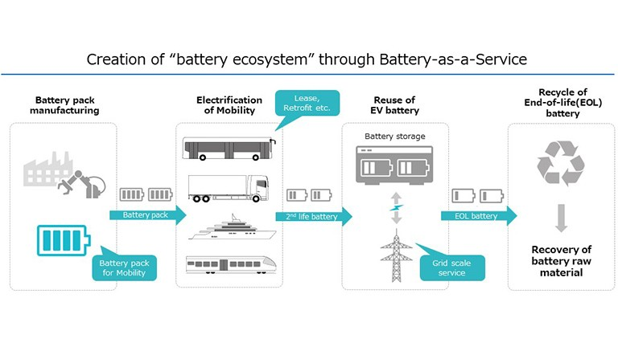
The Economics Behind BaaS
The economic proposition of BaaS is compelling for both consumers and businesses. For consumers, the model dramatically reduces initial purchase costs of electric vehicles by removing the battery expense from the equation. This cost reduction can make EVs immediately price-competitive with internal combustion vehicles, potentially triggering mass adoption across markets previously resistant to electrification.
For businesses, BaaS offers recurring revenue opportunities through subscription models and creates customer relationships that extend well beyond the initial vehicle sale. The model also addresses the complex challenge of battery lifecycle management, creating separate business entities focused on optimizing battery performance, maintenance, and eventual second-life applications. These specialized BaaS providers can achieve economies of scale in battery management that individual owners could never match.
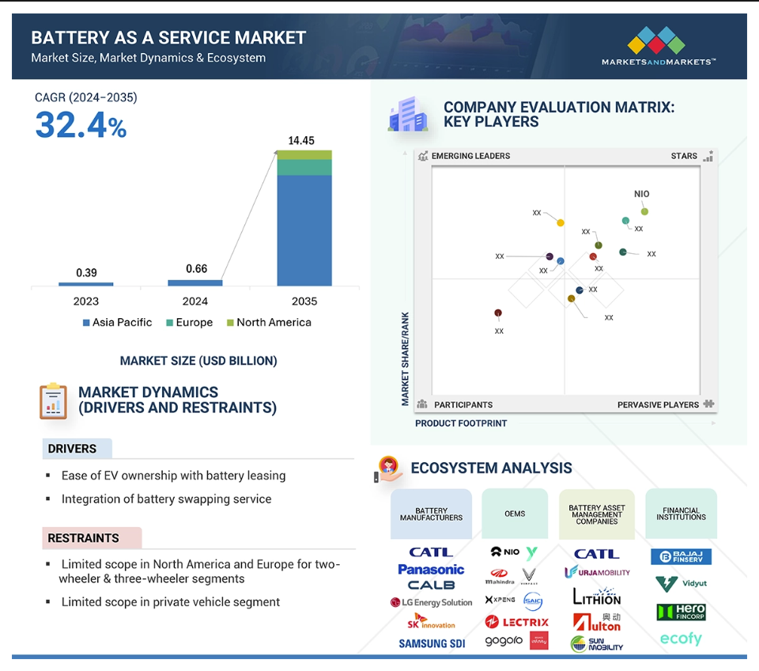
Technical Innovations Driving BaaS
The technical feasibility of BaaS depends on several innovations that have matured in recent years. Standardized battery designs and connection protocols allow for easy swapping and interchangeability between different vehicles and charging stations. Advanced battery management systems continuously monitor health, performance, and charging patterns, enabling predictive maintenance and optimized battery rotation.
Remote diagnostics and over-the-air updates allow service providers to maximize battery longevity and performance without requiring physical inspection. Cloud platforms integrate charging networks, battery swap stations, and mobile charging solutions into unified systems accessible through smartphone applications, creating seamless user experiences that rival or exceed the convenience of traditional refueling. These technical foundations collectively make BaaS viable at scale for the first time.
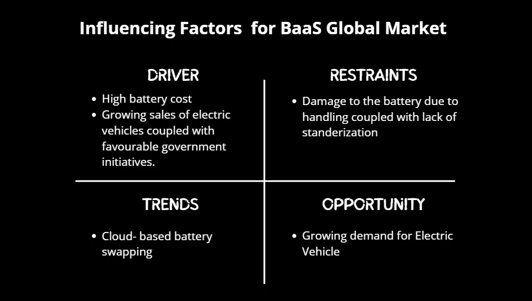
BaaS Models in Electric Mobility
The implementation of Battery as a Service varies significantly across different vehicle segments, with specialized approaches emerging to address the unique needs of each market segment. What works for commercial delivery fleets may differ substantially from solutions optimized for private passenger vehicles or urban micromobility platforms. This diversity of models reflects the early-stage innovation occurring in the BaaS ecosystem, with companies experimenting to discover the optimal configurations for each use case.
Battery Swapping for Two and Three-Wheelers
For smaller vehicles like motorcycles, scooters, and auto-rickshaws, battery swapping has emerged as the dominant BaaS model. This approach allows riders to exchange depleted batteries for fully charged ones at convenient swap stations in just minutes, eliminating charging downtime entirely. The model works particularly well for these vehicle categories because their smaller batteries are easily handled manually and require less sophisticated swapping infrastructure.
Companies like Gogoro have pioneered this approach, creating dense networks of automated battery swapping stations in urban areas that enable continuous operation for delivery services and daily commuters. The swap-based model is particularly valuable in densely populated cities where home charging may be impractical for many residents due to limited private parking facilities. Battery standardization across multiple vehicle brands is crucial for this model to achieve maximum network effects and operational efficiency.
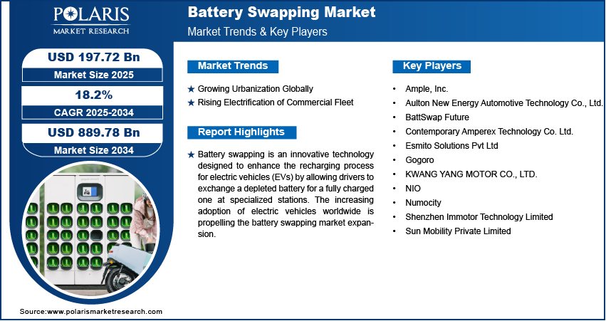
Pay-Per-Kilometer for Four-Wheelers
For passenger cars and other four-wheeled vehicles, a different BaaS model is gaining traction: pay-per-kilometer charging based on actual usage. Under this approach, customers purchase the vehicle but essentially lease the battery, paying a regular subscription plus variable charges based on distance traveled. This model appeals to private owners by aligning costs with actual usage patterns while removing concerns about battery degradation or future replacement expenses.
The pay-per-kilometer approach also creates incentives for more efficient driving behavior as users become more conscious of their energy consumption patterns. Battery monitoring systems track usage and charging cycles, with providers handling all maintenance and eventual replacement when performance falls below specified thresholds, creating a hassle-free ownership experience.
Solutions for Commercial Fleets
The BaaS model offers particularly compelling advantages for commercial vehicle fleets, where vehicle downtime directly impacts revenue and where capital expenditure constraints can limit electrification initiatives. For delivery companies, logistics operators, and ride-sharing services, BaaS can transform vehicle batteries from capital expenses to operating expenses, improving cash flow and financial planning.
The model also addresses the operational challenges of keeping electric fleets charged and ready for service through a combination of depot charging, mobile charging solutions, and strategic battery swapping. Companies like Gogoro are specifically targeting last-mile delivery operations with their BaaS pilot programs, recognizing that the economics of battery swapping become especially favorable when vehicles need to remain in continuous operation throughout the day. Fleet operators further benefit from the predictable cost structure and reduced technical complexity that BaaS provides.
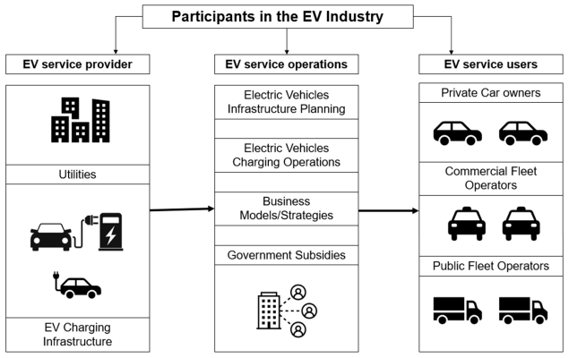
Key Players and Innovations
The BaaS ecosystem is rapidly developing with diverse participants bringing specialized capabilities to the market. Automotive manufacturers, battery technology companies, energy providers, and dedicated startups are all staking claims in this emerging landscape. Their varied approaches highlight the breadth of innovation occurring in this space and suggest that multiple business models may coexist as the sector matures.
NIO Power: Premium Automotive Integration
Chinese electric vehicle manufacturer NIO has built one of the most sophisticated BaaS ecosystems through its NIO Power division. The company offers a comprehensive suite of power services including home charging, mobile charging vans, and most impressively, a growing network of automated battery swap stations. NIO's approach fully integrates BaaS into the premium automotive experience, with swap stations capable of exchanging a vehicle's battery pack in just three minutes without the driver leaving their seat.
This system conducts automatic health checks on both the battery and electric drive systems during each swap, ensuring optimal vehicle performance. NIO's approach demonstrates how BaaS can be positioned as a premium service that enhances rather than compromises the ownership experience, potentially establishing new customer expectations for convenience in electric mobility.
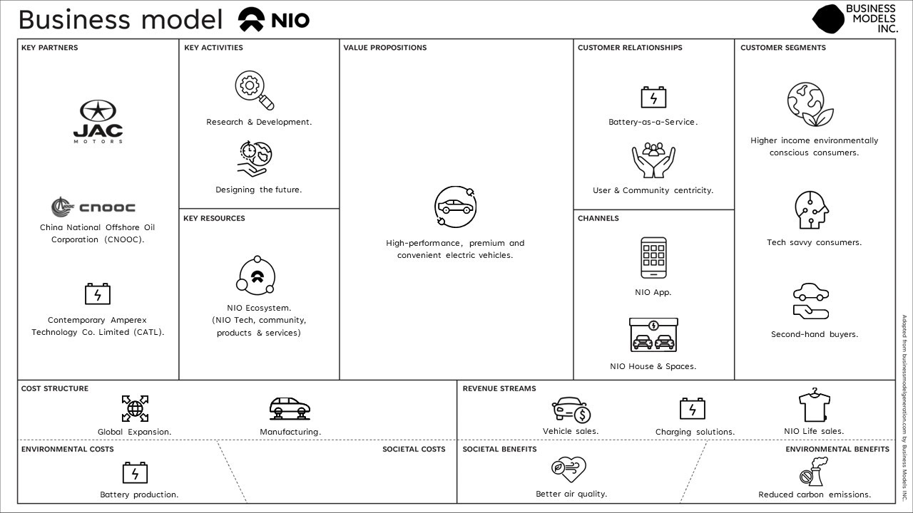
Gogoro: Urban Micromobility Focus
Taiwanese company Gogoro has pioneered BaaS in the two-wheeler segment, building densely distributed networks of battery swap stations in urban environments. The company recently expanded into India with pilot programs focused specifically on last-mile delivery operations in partnership with Zypp Electric . Gogoro's strategy emphasizes achieving critical mass of subscribers to ensure optimal utilization of battery assets across their network.
The company has identified the logistics segment as particularly promising due to high fuel costs and operational inefficiencies that electric solutions with battery swapping can address. Gogoro has also taken leadership in industry standardization efforts, helping establish the India Battery Swapping Association (IBSA) alongside other major players to develop common standards and favorable regulatory frameworks. Their approach demonstrates the importance of ecosystem building and industry collaboration in establishing successful BaaS operations.
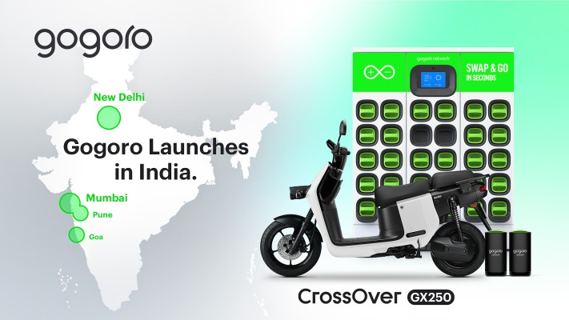
Collaborative Industry Initiatives
The BaaS model inherently requires collaboration across traditional industry boundaries. Vehicle manufacturers, battery producers, charging infrastructure developers, and energy management companies must coordinate to create functioning BaaS ecosystems. Industry associations like the India Battery Swapping Association , which includes participants such as Gogoro , SUN Mobility , Piaggio Group , and Hero MotoCorp , are working to establish common standards that would allow batteries to work across multiple vehicle brands and swapping networks.
These collaborative efforts are essential for creating the network effects and economies of scale that would make BaaS economically viable for all participants. The development of industry standards represents a critical milestone that could accelerate BaaS adoption by reducing fragmentation and ensuring interoperability across systems.
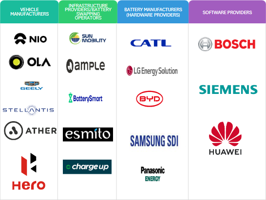
Beyond Mobility: Energy Storage Opportunities
While electric vehicle applications currently drive BaaS development, the model creates opportunities that extend far beyond transportation. The same batteries that power mobility solutions can integrate with broader energy systems, providing grid services, emergency backup power, and renewable energy storage. These additional use cases significantly enhance the economic profile of BaaS by creating multiple revenue streams from the same physical assets.
Second-Life Battery Applications
One of the most promising aspects of BaaS is its ability to manage the complete battery lifecycle, including applications after batteries no longer meet the rigorous demands of vehicular use. EV batteries typically reach end-of-life status when they fall below 80 percent of original capacity, yet they remain valuable for less demanding stationary storage applications. These "second-life" batteries could provide terawatt-hours of energy storage capacity in the coming decades, creating enormous potential for grid-scale applications.
BaaS providers are uniquely positioned to capture this value by designing battery systems with second life in mind from the beginning and managing the transition to stationary applications at the optimal point in each battery's lifecycle. The resulting extension of useful life significantly improves the overall economics of battery production and utilization, potentially making both electric vehicles and energy storage more affordable.
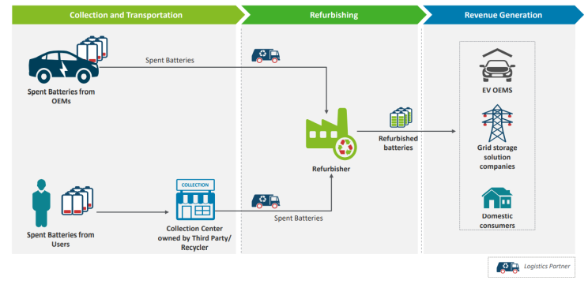
Grid Integration and Energy Services
BaaS creates opportunities for bidirectional value exchange between vehicles and the electrical grid. Managed charging allows vehicles to draw power during periods of excess renewable generation or low demand, helping balance grid operations. Vehicle-to-grid technologies enable EVs to serve as distributed energy resources, providing services such as peak shaving, frequency regulation, and emergency backup power during outages.
BaaS providers can aggregate these capabilities across thousands of vehicles to create virtual power plants of significant capacity, offering valuable services to grid operators while generating additional revenue. This integration transforms vehicles from mere transportation assets into essential components of a more resilient and flexible energy system. The economic value of these grid services could substantially offset the costs of the BaaS model, accelerating adoption.
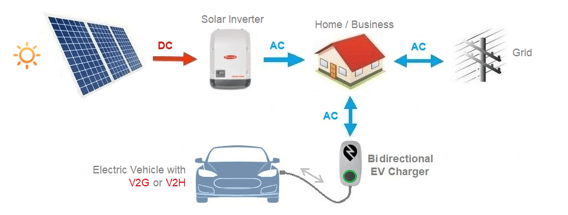
Renewable Energy Acceleration
By providing flexible storage capacity, BaaS can help address one of the fundamental challenges of renewable energy: intermittency. Solar and wind generation don't always align with energy demand patterns, creating the need for storage to bridge these temporal gaps. BaaS networks create distributed storage capacity that can absorb excess renewable generation for later use, helping match supply with demand.
This capability becomes increasingly valuable as renewable penetration increases in electricity systems worldwide. BaaS providers can generate revenue by arbitraging energy prices – charging when energy is abundant and cheap, then discharging when it's scarce and expensive. These economic signals naturally align battery operations with the needs of renewable-heavy grids, potentially accelerating the transition away from fossil fuels.
Market Trends and Future Outlook
The BaaS market is evolving rapidly, with technological innovations, business model experiments, and regulatory developments all influencing its trajectory. Understanding these dynamics is essential for businesses seeking to participate in this emerging ecosystem and for policymakers working to support sustainable transportation and energy systems.
Regional Development Patterns
BaaS implementation is following distinctly different patterns across global markets, reflecting varied local conditions and priorities. China has emerged as the clear leader in battery swapping technology and deployment, supported by government policies that specifically encourage this approach. In India, BaaS is gaining momentum as a solution particularly well-suited to the country's large two-wheeler market and dense urban environments, with several major players conducting pilot programs.
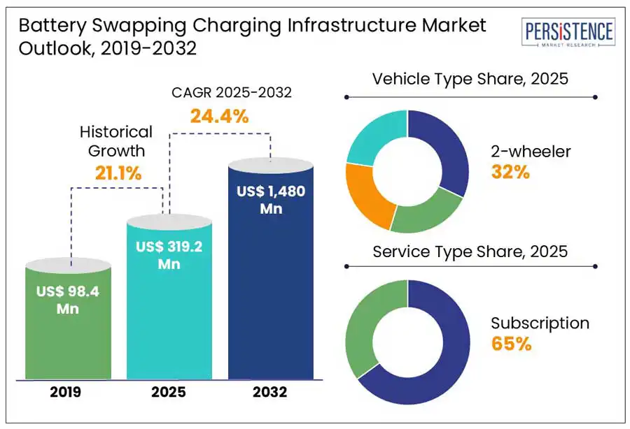
European and North American markets have focused more on fixed charging infrastructure than battery swapping, though interest in BaaS models is growing as EV adoption accelerates. These regional variations create opportunities for knowledge transfer and adaptation of successful approaches across markets, while recognizing that solutions must be tailored to local conditions.
Regulatory Influences and Policy Support
Government policies significantly impact BaaS development through vehicle subsidies, charging infrastructure incentives, and regulatory frameworks for battery ownership and recycling. Countries like China have explicitly included battery swapping in their national electrification strategies, providing subsidies specifically for swap-capable vehicles. Standards development for battery design, connection protocols, and safety requirements is another crucial area where government involvement can either accelerate or hinder BaaS growth.
Environmental regulations around battery disposal and recycling also shape the economics of battery lifecycle management, potentially making the controlled processes of BaaS more advantageous. As climate goals drive increasingly ambitious electrification targets, more governments may recognize BaaS as a tool to accelerate transition timeframes.
Conclusion
The Battery as a Service model represents a fundamental reimagining of how we power electric mobility and manage energy storage assets. By transforming batteries from products into services, BaaS addresses critical barriers to EV adoption while creating entirely new business opportunities across mobility, energy, and technology sectors. The separation of vehicle and battery ownership reduces upfront costs, eliminates concerns about battery degradation, and creates flexibility that traditional ownership models cannot match.